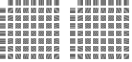
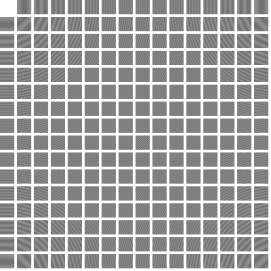
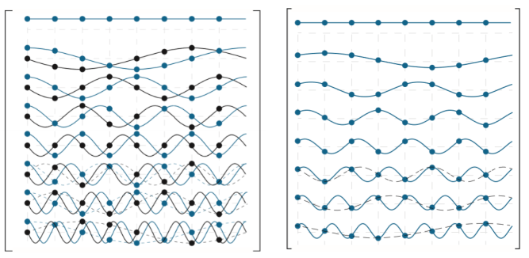
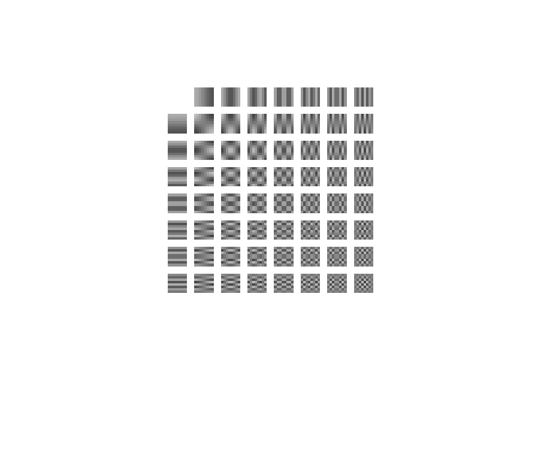

wavelet-and-other-image-transforms
本文用以总结和消化digital image processing中的小波变换一章，众所周知小波变换和其他内积变换在信号处理中是重要的，因此本文在梳理过程中引入一些代码和图像辅助理解。
基本概念
首先需要明白离散傅立叶变换、Hartley变换、DCT、DST、Walsh-Hadamard变换、Haar小波、其他小波变换都是线性变换，他们的目的都是将原信号转换成线性展开因子。除此之外，这些线性变换还有如下共同特点：
能量和信息在变换前后是相同的此处可能有歧义，区别只在能量和信息分布的不同
这些线性变换的计算基础都是内积，这说明内积有着非常重要的性质
向量空间和内积空间
向量空间是一系列向量的集合，这些向量能够相加或乘以一个标量
内积空间是一个具备内积函数的向量空间，在内积空间两个向量能够发生内积进而转换为一个标量，并且对于向量\(u,v\)，标量\(\alpha\)而言满足：
- \(\left< u,v\right> = \left< v,u \right>^*\)
- \(\left< u+v,w\right> = \left< u, w \right> + \left< v, w \right>\)
- \(\left< \alpha u,v\right> = \alpha \left< u,v \right>\)
- \(\left< v,v\right> \ge 0\ and\ \left< v,v \right> =0 \ \mbox{if and only if}\ v=0\)
关于如上定义有以下几点需要说明：
向量空间一个例子就是常见的x，y轴所形成的空间，在这个空间中可以乘以一个标量进行向量的伸缩，也可以相加改变向量的首位
内积空间一个例子就是实数空间\(\mathbb{R}\),在实数空间中的内积就是乘法，两个向量（在实数空间中就是实数）做乘得到一个标量，并且上述条件在实数空间均满足
内积空间和向量空间的差别就在，内积空间有内积运算。内积运算的存在使得我们能够定义正交，而正交具有非常重要的性质。内积空间可以由不同的向量空间定义特定的内积函数产生，当然这些所定义的内积函数必须满足内积空间的条件。
最常见的三种内积空间为笛卡尔空间、酉空间和连续函数内积空间。这三种内积空间最大的区别就在其内积操作的对象。
对于笛卡尔空间\(\mathbb{R}^N\)来说，其内积操作对象为实数：
\[\left< u,v \right> = u^T v = \sum_{i=0}^{N-1} u_i v_i\]
其中，\(u,v\)都是\(N \times 1\)的向量。
对于酉空间\(\mathbb{C}^N\)来说，其内积操作对象为复数:
\[\left< u,v \right> = u^{*T} a= \sum_{i=0}^{N-1} u_i^* v_i = \left< v,u \right> ^*\]
其中，\(u,v\)都是复数形式的\(N \times 1\)向量，\(*\)为共轭。
对于连续函数内积空间\(\mathbb{C}\left[ a,b \right]\)而言，它的内积对象是在区间\(a \le x \le b\)的连续函数，它的内积函数是积分内积：
\[\left< f(x),g(x) \right> = \int_a^b f^*(x)g(x)dx\]
上述分别定义了在离散实数范围、离散复数范围和连续复数范围的内积空间.一旦定义好了恰当的内积空间，便可以深入研究内积空间的性质，下面讨论的性质显然适用于上述所有内积空间。再扩展向量的概念，我们说向量\(w\)在笛卡尔空间或者酉空间，很显然我们其实是在说它是一个离散实数向量或离散复数向量，而如果我们说向量\(w\)在连续函数内积空间，可以理解为\(w\)也是一个向量，只是它是连续的，由无数个离散点组成的。因此在讨论内积空间的性质时常常提到的向量，可能是个\(N \times 1\)矩阵，也可能是一个连续函数。但这不妨碍内积空间性质的讨论。
内积空间最基础的，需要能够知道向量的长度，即范数\(||z||\):
\[||z|| = \sqrt{\left< z,z \right>} \tag{1}\]
和两个向量在内积空间中的角度：
\[\theta = \cos^{-1} \frac{\left< z,w \right>}{||z|| \cdot ||w||} \tag{2}\]
有了这两点性质，我们就能够定义内积空间一个非常重要的性质：正交。我们说，当两个向量的角度为\(90^\circ\)即垂直/正交.显然当正交时，\(\left< z,w \right> =0\)。推而广之，如果存在一系列的非零向量\(w_0,w_1,w_2,...\)，这些向量两两相互正交,即：
\[\left< w_k,w_l \right> =0 \ \mbox{for}\; k \ne l \tag{3}\]
那么认为这些向量是这个内积空间的正交基(orthogonal basis)，这个向量空间可以由这些正交基生成/展开(span)。换句话说，这些正交基支撑了这个向量空间。
如果这些向量被归一化了，那么这些正交基又被称为标准正交基：
\[\left< w_k,w_l \right> = \delta_{kl} = \left\{ \begin{array}{rc1} 0 & \mbox{for} & k\ne l \\ 1 & \mbox{for} & k=l \end{array} \right. \tag{4}\]
内积空间的正交基一个非常重要的性质就是能够简明的表达在这个内积空间中的任何向量，比如如果在一个内积空间\(V\)中，存在正交基\(W=\left\{ w_0,w_1,w_2,... \right\}\)和一个向量\(z \in V\)，那么我们可以使用正交基的线性组合简明地表达该向量：
\[z=\alpha_0 w_0 + \alpha_1 w_1 + \alpha_2 w_2+... \tag{5}\]
上述公式5可以看作是一个分解过程，即在内积空间\(V\)中的向量\(z\)向正交基与特定\(\alpha_i\)线性组合分解。这种分解可以看作是一种变换.因此我们需要知道正交基\(W\)是什么以及分解系数\(\alpha\)该如何求得。
接下来的推导将得出假设已知正交基时，我们应该如何求得\(\alpha\):
将第i个正交基\(w_i\)与\(z\)做内积：
\[ \begin{equation} \begin{aligned} \left< w_i,z \right> &= \left<w_i, \alpha_0 w_0 + \alpha_1 w_1 + \alpha_2 w_2+... \right> \\ &= \alpha_0 \left<w_i,w_0 \right> + \alpha_1 \left<w_i,w_1 \right>+...+\alpha_i \left< w_i,w_i \right>+... \\ &= \alpha_i \left<w_i,w_i \right> \end{aligned} \end{equation} \tag{6} \]
公式6的第一个等号利用了公式5对\(z\)的线性展开，第二个等号运用了内积空间条件和正交基相互正交的性质，第三个等号是最后唯一留下来的正交基自己的内积项。可以通过公式6得到第i个\(\alpha_i\):
\[\alpha_i = \frac{\left< w_i,z \right>}{\left<w_i,w_i \right>} \tag{7}\]
那么如果再满足公式4，即正交基都是标准正交基的话，分母就变成了1，公式7能够再被简化为\(\alpha_i =\left< w_i,z \right>\).
关于公式7还有一点需要说明，这里的\(\alpha_i\)只是一个标量（内积函数的输出），\(w_i\)和\(z\)都是向量。回到最开始的不同内积空间的定义，比如我们在酉空间中讨论，则这两个向量是复数，那么公式7可以进一步展开为：
\[\alpha_i = \frac{\left< w_i,z \right>}{\left<w_i,w_i \right>} = \sum_{i=0}^{N-1} u_i^* v_i \]
同理在不同的内积空间中的向量，需要应用不同的内积函数进行详细的计算。
小结
在上面的讨论中主要说了如下几件事情：
内积空间一个非常重要的性质就是内积函数，由于内积函数的存在，我们可以定义空间中的垂直（正交）
由于正交的特性，可以找到一系列的正交基用于生成空间。正交基相互正交支撑起了这个内积空间。
在内积空间中的任何向量都可以由正交基的线性组合简明表达
上述公式5可以看作是一种变换，它使得原向量\(z\)向目标内积空间变换，他们二者能量和信息相同，只是换了一种观察的角度。而由于我们假设已知这个内积空间的正交基，因此只需要知道每一个基前面所乘系数\(\alpha_i\)即可。求取\(\alpha_i\)的过程可以使用公式7完成。但需要指出的是，公式7求的是第i个\(w_i\)前面的系数，因此若一共有\(N\)个\(w\)，则应该分别求从i=0到i=N-1共N个\(\alpha_i\)才算是完整的将\(z\)分解到内积空间\(V\)。
基于矩阵的变换
在本文最前面提到离散傅立叶变换也是一种内积操作，我们来观察如下两个公式：
\[F(u) = \sum_{x=0}^{N-1} f(x) e^{-j 2\pi (u x /M)}\ u=0,1,2,...,N-1 \tag{8}\]
\[T(u) = \sum_{x=0}^{N-1} f(x)r(x,u)\ u=0,1,2,...,N-1 \tag{9}\]
公式8为一维离散傅立叶变换，公式9为公式7的进一步扩展表达.我们发现类似傅立叶变换的转换都可以用公式9来描述。或者说离散傅立叶变换其实是公式9内积变换的一种特例（特在公式8具体了正交基的表达）.
再次注意公式9中写\(u=0,1,2,...,N-1\)说明公式9需要计算N次才是一次完整的转换，而我们也能发现每一次计算\(T(u)\)都遍历了一次原始数据\(f(x)\)。
同理有傅立叶逆变换：
\[f(x) = \frac{1}{M} \sum_{x=0}^{N-1} F(u) e^{j 2\pi (u x /M)}\ x=0,1,2,...,N-1 \tag{10}\]
\[f(x) = \sum_{x=0}^{N-1} T(u)s(x,u)\ x=0,1,2,...,N-1 \tag{11}\]
公式9和公式11共同组成了变换对(transform pair)。称\(r(x,u)\)和\(s(x,u)\)为变换核。
观察公式11，这是\(f(x)\)在内积空间中的线性展开(类似公式5)。为了和公式5做更详细的比较，我们展开公式11:
\[f(x) = T(0)s(x,0) + T(1)s(x,1) + ... + T(N-1)s(x,N-1) \tag{12}\]
关于式子12有更多的细节需要注意：
T(i)为分解出的系数，类似公式5中的\(\alpha_i\)
s(x,i)为正交基中的一个向量，类似公式5中的\(w_i\)
公式9，11，12都基于我们所分解的原始数据\(f(x)\)是离散序列前提，这也符合对数字图像处理的期待
现在我们想要求得分解后的\(T(u)\)（类似之前求\(\alpha_i\)），一种方法是利用公式9进行正变换。但通常我们更习惯已知逆变换核\(s(x,u)\)，那么类似公式7有：
\[T(u) = \left< s(x,u),f(x) \right> \tag{13}\]
关于公式13有一点需要说明，不难发现公式13可以改写为：
\[T(u) = \left< s(x,u),f(x) \right> = s(x,u)^{*T}f(x)=\sum_{x=0}^{N-1}s^* (x,u) f(x)\]
结合公式9可知，\(r(x,u) = s^* (x,u)\)。以傅立叶变换来说，它的逆变换核\(s^* (x,u)=\left\{e^{j 2\pi (ux/M)} \right\} ^* = r(x,u)\).如果变换核都是实数，那么它的共轭就是自身；如果变换核是复数，那么它对应的变换核对就是它的共轭。
下面把矩阵引入计算，首先说明为什么要引入矩阵。我们在求变换的系数时用公式13，但是公式13一个非常显著的问题是它一次只计算一个值，需要从u=0计算到u=N-1为止。显然这种顺序性、重复性的计算适合使用矩阵来简化表达。
定义原始信号函数\(f(x)\)，变换后的序列\(T(u)\)和逆变换核\(s(x,u)\)为列向量：
\[f = \left[ \begin{matrix} f(0) \\ f(1) \\ \vdots \\ f(N-1) \end{matrix} \right] = \left[ \begin{matrix} f_0 \\ f_1 \\ \vdots \\ f_{N-1}\end{matrix} \right] \tag{14}\]
\[t = \left[ \begin{matrix} T(0) \\ T(1) \\ \vdots \\ T(N-1) \end{matrix} \right] = \left[ \begin{matrix} t_0 \\ t_1 \\ \vdots \\ t_{N-1}\end{matrix} \right] \tag{15}\]
进行一次公式13的计算只能得到一个\(T(u)\)，需要进行N次计算才能得到完整的\(t\)向量。
\[s_u = \left[ \begin{matrix} s(0,u) \\ s(1,u) \\ \vdots \\ s(N-1,u) \end{matrix} \right] = \left[ \begin{matrix} s_{u,0} \\ s_{u,1} \\ \vdots \\ s_{u,N-1}\end{matrix} \right]\ \mbox{for}\ u=0,1,...,N-1 \tag{16}\]
注意公式16，\(s_u\)是一个列向量，其中的分量对应的是\(x\)从0到N-1。不难发现，\(s_u\)就是公式13中的\(s(x,u),\mbox{for}\ x=0,1,...,N-1\)的矩阵写法。因此，公式13可以改写为矩阵：
\[T(u) = \left<s_u,f\right>\ \mbox{for}\ u=0,1,...,N-1 \tag{17}\]
当然直到现在公式17仍然只是一次性只计算一个\(T(u)\)，但好消息是它被转换成了矩阵表达，现在开始拓展。引入\(N \times N\)变换矩阵\(A\):
\[A = \left[ \begin{matrix} s_0^T \\ s_1^T \\ \vdots \\ s_{N-1}^T \end{matrix} \right] = \left[ \begin{matrix} s_0 & s_1 & \ldots & s_{N-1}\end{matrix} \right]^T \tag{18}\]
矩阵\(A\)是N个不同的\(s_u\)的结合，因此共同形成了一个\(N \times N\)的变换矩阵。有了这个从u=0到u=N-1均有涵盖的变换矩阵，就可以通过一次变换得到所有的\(T(u)\)，也就是\(t\)向量:
\[\begin{equation} \begin{aligned}t = \left[ \begin{matrix} \left<s_0,f\right> \\ \left<s_0,f\right>\\ \vdots \\ \left<s_0,f\right>\end{matrix} \right] &= \left[ \begin{matrix} s_{0,0}f_0+s_{1,0}f_1+\ldots + s_{N-1,0}f_{N-1} \\ s_{0,1}f_0 + s_{1,1}f_1 + \ldots + s_{N-1,1} f_{N-1} \\ \vdots \\ s_{0,N-1} f_0 + s_{1,N-1} f_1 + \ldots + s_{N-1,N-1} f_{N-1} \end{matrix} \right] \\ &= \left[ \begin{matrix} s_{0,0} & s_{1,0} & \ldots& s_{N-1,0} \\ s_{0,1} & s_{1,1} \\ \vdots&\ & \ddots & s_{N-1,N-2} \\ s_{0,N-1}&\ &s_{N-2,N-1}&s_{N-1,N-1} \end{matrix} \right] \left[ \begin{matrix} f_0 \\ f_1 \\ \vdots \\ f_{N-1} \end{matrix} \right] \end{aligned}\end{equation} \tag{19}\]
公式19可以简写为:
\[t = Af \tag{20}\]
公式20就把所有的\(T(u)\)一次性解完，下面我们看一种特殊情况，假设\(A\)是一个是实数和正交的，那么有结论：
\[AA^T = I \tag{21}\]
有了公式21，我们在来看公式20，同时在公式20左乘\(A^T\):
\[f = A^T t \tag{22}\]
因此可以说，在假设矩阵\(A\)是实数且正交时，我么不需要知道正变换核，正变换可由逆变换推导得到。而且在前面也提到如果变换核是实数，那么\(r(x,u) = s(x,u)\).
关于当\(A\)是实数和正交时，还有一些结论：
- 在原始空间中存在的两个向量\(f_1,f_2\)它们在原始空间中的距离、角度在新的内积空间是一样的：
\[\left<f_1,f_2 \right> = \left<t_1,t_2 \right>= \left<A f_1,A f_2 \right>\]
这是因为：
\[\begin{equation} \begin{aligned}\left<f_1,f_2 \right> &= \left<A^T t_1,A^T t_2 \right> = (A^T t_1)^T \cdot A^T t_2 \\ &=t_1^T A \cdot A^T t_2 \\ &=t_1^T \cdot t_2 \\ &= \left<t_1,t_2\right> \end{aligned} \end{equation}\]
- 矩阵\(A\)的行向量、列向量均是正交基
图像的矩阵变换
仿写公式9和公式11到二维，有：
\[T(u,v) = \sum_{x=0}^{N-1} \sum_{y=0}^{N-1} f(x,y)r(x,y,u,v) \tag{23}\]
\[f(x,y) = \sum_{u=0}^{N-1} \sum_{v=0}^{N-1} T(u,v)s(x,y,u,v) \tag{24}\]
二维的变换更加复杂，但digital image processing书中进行了尽可能的前提假设以简化表达，书中假设了以下条件：
- 转换核\(r(x,y,u,v)\)是可拆分的：
\[r(x,y,u,v) = r_1(x,u)r_2(y,v)\]
- 转换核\(r(x,y,u,v)\)是镜像的：
\[r(x,y,u,v) = r_1(x,u)r_1(y,v)\]
- 转换核是实数、正交的，因此\(r=s\)
基于上述三种假设，二维的矩阵变换已经被简化的非常简单，公式23,24也可以写为相应矩阵形式：
\[T = AFA^T \tag{25}\]
\[F = A^T FA \tag{26}\]
其中\(F\)为\(N \times N\)的图像，\(T\)为对应尺寸的变换，\(A^T\)计算了\(F\)的行变换，\(A\)计算了\(F\)的列变换。
相关性(Correlation)
内积计算的结果是一个值，这个值表达了什么含义？相关性的概念对这个值有解释。先看相关性的定义：
相关性的定义为，有两个连续函数\(f(x),g(x)\),它们的相关性为：
\[\begin{equation} \begin{aligned} f \bigstar (\Delta x) &= \int_{- \infty}^{\infty}f^*(x)g(x+\Delta x)dx \\ &= \left<f(x),g(x+\Delta x) \right> \end{aligned} \end{equation} \]
相关性和内积在\(\Delta x=0\)时等价：
\[f \bigstar g(0) = \left< f(x),g(x) \right>\]
仿照前面公式17，如果我们求原始向量\(f\)与正交基向量中的一个\(s_u\)的内积，得到一个展开项系数：
\[\alpha_u = \left< f,s_u \right> = f \bigstar s_u (0) \tag{27}\]
由此可知，内积的结果其实描述的是两个函数的相似程度，相似程度越高那么相关性/内积越大。
时频面中的基函数
结合相关性的知识我们已经知道，两个函数越相似那么其相关性越大。观察公式17或公式27，描述了一个带分解原始函数\(f\)与一个基函数\(s_u\)的关联程度（相似程度）。函数\(f\)与\(s_u\)的相似性体现在时间历程上的相似和频率上的相似，换句话说原函数\(f\)与\(s_u\)越相似，他们在形状和带宽上也就越接近。
这就不难理解傅立叶变换的工作了，傅立叶变换的基函数是频率不断递增的谐波函数，因此傅立叶变换求内积的过程其实就是原函数分别与不同频率的谐波求相关性的过程，在求取过程中原函数中越有接近基函数的频率(但却没时间)，那么在那个频率的基函数对应的系数越大（相关性越大），进而能够提取出原函数中的周期性成分。
digital image processing中对于几种常见的基函数列了一个表格如下：
关于这个图有一下说明：
图中全部为离散时各种小波的u=0到u=15共16中基函数向量表达
DFT有两列，这是因为DFT的基函数是一个复数，分别对应的是实部和虚部
书中提供了一种思路，我们知道在求傅立叶变换时其实就是分别让u=0到u=15对应的基函数与原始函数发生内积，然后从得到的图像中提取出需要周期性；但假如我们现在只想研究图像中亮度线性增加的部分，那么其实我们可以考虑原始图像只与SLT（斜坡）的第二个基函数内积即可，而不需要再与其他SLT频率内积了。
回到相似性的观点上来，时间历程上的相似和频率上的相似，其实从另一个角度来看就是定位的过程。包括了形状上的定位和带宽上的定位。基函数\(h\)的定位能力可以在时频图上表达，分别描述了这个基函数在时间和频率上的定位能力：

从这个图中可以知道，在基函数与原始函数发生内积的过程，其实就是在将原始函数与基函数的时间、频率发生相关性计算的过程。比如在这个图中的，如果原始函数与这个基函数\(h\)非常相似，那么在相交的地方值相关性结果会非常大。显然这个定位是宽泛的（因为它是一个拥有矩形面积的区域），我们希望能够非常准确的定位，也就是这个矩形越小越好，最理想能小成一个点。但是基函数的时频定位能力受限于Heisenberg不确定性原理，即不存在一个函数同时拥有有限的时间和频率支撑。这意味着，任何基函数在一个空间中是有限的，那么在另一个空间一定是无限延伸的。

观察上面的图，上是在时域的脉冲函数，其频率域中是一条跨越全频率的横线。对于这种特性的基函数而言，显然相关性结果会显示出上图3的样子，即在时间上有精确的定位，而在频率上没有分辨率可言。这个过程其实类似于离散采样。
相反我们知道傅立叶变换在时域上是两个谐波，在频域上是一个脉冲函数，这意味着相关性结果会显示下图3的样子，即在频率上有精确的定位，但时间上没有分辨率可言。
上图和上面的文字描述只是基函数中某一个u的特例，如果我们遍历所有的u，会得到下面的图：

回到图1常见的变换中来，这幅图的上半部都是跨越整个时间轴的图像，自然类似于在图3中的讨论那样，他们不具备在时间上的定位能力，只具备频域定位能力。但图1下半部给出了一种全新的思路，即小波(wavelet)，它只存在于时间轴上的一小段，并且具备在时间轴上移动、缩放的能力。因此，小波同时具备时间历程和频率的定位能力。下面开始简单的讨论小波的构成。
初识小波
我们之所以需要小波分析是因为脉冲采样所对应的时间域分析虽然对时间定位精确，即我们能够知道任意采样时刻有什么样的信号，但很难从中获取更多有意义的信息。比如各种杂波叠加在一起时，我们就已经束手无策了.这催生出傅立叶分析，傅立叶变换将时间域转换到了频率域，我们能够从频率的角度观察信号，或者对信号进行滤波，或者研究信号的频率组成成分.但傅立叶变换丢失了时间定位信息，这意味着我们不能像时间域分析那样直接从谱图中得到“这个频谱是哪里/何时发出的”。甚至有时候完全不同的输入信号谱图会得到完全一样的频域图。因此，我们需要同时获得时间、频率两个信息。小波分析的目标就是利用小波的变尺度、平移特性，能够以不同的尺度和时间来分解信号。
以图4的时频分辨率相比较，小波的时频图如下：

我们已经知道时间分辨率和频率分辨域不可能同时小，而且受限于Heisenberg不确定性原则。那么我们放宽我们的分析目标:首先，对于信号中的低频部分，由于这部分频率变化缓慢，因此为了检测出低频部分的频率信息，我们需要在低频部分拥有较高的频率分辨率，同时理所应当的，受限于Heisenberg不确定性原则，较高的频率分辨率使得低频部分的时间分辨率较低。这部分阐述其实对应了图5的下半部分图样。第二，对于高频部分信号，由于高频频率特点是短时间内剧烈变化，我们需要在时间上有较高的分辨率以便能够捕获这些短暂变化的高频信息，同样受限于Heisenberg不缺性原则，这使得高频频率分辨率降低。这部分阐述对应了图5上半部分图样。
由此可见，小波分析具备变尺度分析信号的能力。
为了构成小波需要定义一个母小波(mother wavelet)\(\psi\):
\[\psi_{s,\tau} (t) = 2^{s/2} \psi(2^s t - \tau) \tag{28}\]
关于公式28有如下说明：
母小波\(\psi(t)\)是一个实数、平方可积的像带通一样的图像
小波基函数是由可以缩放和平移的，缩放由\(s\)实现，平移由\(\tau\)实现
基图像
基图像的概念是将一维的正交基向二维拓展的产物。回顾公式24：
\[f(x,y) = \sum_{u=0}^{N-1} \sum_{v=0}^{N-1} T(u,v)s(x,y,u,v) \tag{24}\]
我们把公式24写成矩阵形式：
\[F = \sum_{u=0}^{N-1} \sum_{v=0}^{N-1} T(u,v)S_{u,v} \tag{29}\]
其中的\(F\)就是一个\(N \times N\)的原始图像，而\(S_{u,v}\)是一个矩阵：
\[ S_{u,v} = \left[ \begin{matrix} s(0,0,u,v) & s(0,1,u,v) & \cdots & s(0,N-1,u,v) \\ s(1,0,u,v) & \vdots & \cdots & \vdots \\ \vdots & \vdots & \cdots & \vdots \\ \vdots & \vdots & \cdots & \vdots \\ \vdots \\ s(N-1,0,u,v) & s(N-1,1,u,v) & \cdots & s(N-1,N-1,u,v) \end{matrix} \right] \]
需要注意这个\(S_{u,v}\)矩阵的\(u,v=0,1,...,N-1\)，这意味着整个构成\(F\)的\(S\)矩阵应该是\(N^2\)个\(N\times N\)组成。同样，假设\(s(u,v,x,y)\)是一个实数的、可拆分的、镜像的，那么有：
\[S_{u,v} = s_u s_v^T \tag{30}\]
下面介绍几种基函数的基图像的画法，包括DFT、DHT、DCT、DST。其中DHT、DCT、DST的特点是他们都是类傅立叶的变换，区别在于对于实数信号，FFT的结果是复数的，而这三个类傅立叶实数变换仍然是实数。
discrete Fourier transform
一维离散傅立叶变换的基函数为：
\[s(x,u) = \frac{1}{\sqrt{N}} e^{j 2\pi u x /N}\ \mbox{for}\ u=0,1,...,N-1 \tag{31}\]
关于这个基函数表达31有几点需要注意：
DFT的基函数是一个复数函数
由于DFT是离散的，因此一定存在有限的采样长度，这会导致问题：

在这个支撑基函数为\(N=8\)的采样序列矩阵中，我们分别计算对应位置(\(x=0,1,2,...,7\))处的\(s(x,u)\)并放入表中。对于每一个\(u=0,1,...,7\)，都有两个谐波图像，这是因为DFT基函数是一个复数函数。因此，蓝色代表了实数部分谐波，而黑色代表了虚数部分谐波。可以看到随着u的增大，基函数频率逐渐升高。
问题出现在u=4之后的谐波图形，可以看到u=5,6,7三幅图像有蓝色和黑色的虚线和实线。实线说明的是当公式31的x是连续时，理想当中的基函数图像，而虚线说明的是当公式31的x为离散的时，实际上得到的基函数图像。
根据上段的描述就已经知道了这出现了采样的问题.用离散点来描述谐波，能够描述的最大的频率出现在u=N/2个点描述一个周期,对应u=4时，可以看到采样点出现在实线的峰值位置。一旦超过这个频率，四个点就不足以描述，因此会出现混叠。这种混叠呈现出一种对称性:\(s_5 = s_3^*,s_6=s_2^*,s_7=s_1^*\).
我们可以从图1的DFT中同样看出这种混叠现象的发生。混叠使得最终形成的傅立叶基函数呈现出对称性，换句话说有一半的内积变换是不需要计算的。下面拓展到二维的傅立叶变换基图像。回顾digital image processing第四章中2-D离散傅立叶变换的定义：
\[F(u,v) = \sum_{x=0}^{M-1} \sum_{y=0}^{N-1} f(x,y) e^{-j 2\pi (ux/M + vy/N)} \tag{32}\]
我们重新审视这个公式不难发现，公式32的变换核为$e^{-j 2(ux/M + vy/N)} $。这个核有以下特点：
它是复数的
它是两个方向的一维DFT的乘积，即\(...=e^{-j 2\pi ux/M} \times e^{-j 2\pi vy/N}\)
那么我们如何画出二维傅立叶变换核呢？首先，我们要明确，基图像由若干个小的基图像组成。比如一个尺寸为\(N\times N\)的原始图像，对应了\(N*N\)个尺寸为\(N \times N\)的基图像。这一群基图像共同组成了一个大的基图像。
为画出二维离散傅里叶核对应的基图像，确定一个\(u,v\)，即确定了一个\(S_{u,v}\)矩阵.这两个参数对应了不同程度的基图像频率，越大对应的频率也就越大，但根据上文的叙述可以明白当达到\(u=M/2,v=N/2\)时频率出现了混叠,再往后的图像将和前面的图像镜像。然后，\(x,y\)分别从0到M和从0到N递增，填写这个矩阵内部的数值。最后依次改变\(u,v\)进行下一个\(S_{u,v}\)的绘制。
下面的代码为指定原始图像的尺寸\(N\)，假设这个图像是方形时的基图像：
1 | function [] = pltDFT(N) |
下图为执行pltDFT(8)时的输出图像:

从图中可以得到以下结论：
可以看到图7相对u=4，v=4中心对称，这是因为DFT只能在一半位置处达到最高频率，其他更高的频率受限于采样点不足的原因而产生混叠
我们在使用公式32进行二维图像傅立叶变换时，相当于是在对这个基图像中每一个图像发生相关性操作（内积）
对于不同的原始图像尺寸，对应的基图像其实是有所不同的:

另外，可以从图7看出，四角的基图像频率低，向着中心频率逐渐升高到中间位置达到最高。这一点的和傅立叶变换输出的结果，结合二维离散傅立叶变换的一些性质讨论可以得到一样结论:即傅立叶变换的结果，在四角为直流分量，向着中心频率逐渐升高。
discrete Hartley transform
DHT是一种类似于DFT的线性变换，但又有所不同：
DHT计算的结果是实数，而DFT是复数；
DHT的基图像因此也有所不同
DHT的逆变换核如下:
\[\begin{equation} \begin{aligned} s(x,u) &= \frac{1}{\sqrt{N}} cas (\frac{2 \pi ux}{N}) \\ &=\frac{1}{\sqrt{N}} \left[ \cos (\frac{2 \pi ux}{N}) + \sin(\frac{2 \pi ux}{N}) \right] \end{aligned} \end{equation} \tag{33} \]
对应的二维形式：
\[s(x,y,u,v) = \left[ \frac{1}{\sqrt{N}} cas (\frac{2 \pi ux}{N})\right] \left[ \frac{1}{\sqrt{N}} cas (\frac{2 \pi uy}{N}) \right] \tag{34}\]
关于公式33有以下说明:
DHT的基函数是实数的，正交的，镜像的，这意味着对于DHT的基图像矩阵\(A_{HY}\)来说，有关系：\(A_{HY} = A_{HY}^T = A_{HY}^{-1}\)
DHT由于满足上述关系，也同时意味着DHT变换的正变换、逆变换核是一样的
观察公式33的第二个等号cas的展开，使用欧拉公式展开公式31:
\[s(x,u)=\frac{1}{\sqrt{N}} \cos (\frac{2\pi ux}{N} - j \sin (\frac{2 \pi ux}{N}\]
由此可知在基函数/基图像上DHT和DFT存在关系：
\[ \begin{equation} \begin{aligned} A_{HY} &= Real{A_F} - Image{A_F}\\ &= Real{(1+j)A_F} \end{aligned} \end{equation} \]
这个关系说明DFT和DHT可以通过公式转化，但绝不是DFT简单的实数部分截取。那么DHT和DFT在图像上有什么区别呢？先看一维时候的图像：

图8的左边是DFT图像，这个图在上文中有出现。只需要注意的是，DFT的蓝色实线是DFT的实数部分，黑色实线是DFT的虚数部分。右边是DHT的图像，它只有实数部分。观察可以发现在实数部分上两个图像是相似的，只是相位上有差距。为了更加细致的研究二者在数值（幅度和相位）上的关系，我们取DFT的实部：
\[\begin{equation} \begin{aligned} Re {s_F(x,u)} &= Re \left{\frac{1}{\sqrt{N}} e^{j 2 \pi ux /N} \right} \\ &=\frac{1}{\sqrt{N}} \cos (\frac{2 \pi ux }{N}) \end{aligned} \end{equation} \tag{35}\]
由三角关系\(cas(\theta) = \sqrt{2} \cos (\theta - \pi/4)\),可以把公式33的第一个等式稍加修改：
\[s_H(x,u) = \sqrt{\frac{2}{N}} \cos (\frac{2 \pi ux}{N} - \frac{\pi}{4} ) \tag{36}\]
公式35和公式36说明，在实数部分DFT和DHT确实存在相似性，主要表现在都是余弦，并且频率相同。但也存在不同，首先余弦的幅度是差了\(\sqrt{2}\)倍的，其次相位差了\(\pi / 4\)a.
使用公式34画出DHT的基图像，只需要改变DFT时的两个x，y公式即可:
1 | %... |

关于图9，有以下几点需要强调，主要是和DFT基图像的联系：
与DFT基图像一样，当u>N/2时会出现混叠；也就是说DHT的能够达到的最大频率出现在N/2位置处
由于上述原因，不难理解DFT和DHT具有一样的频率分辨率，都为\(\Delta u = 1 / (N \Delta T)\)
综上，DHT可以看作是实数版本的DFT。除此之外相较于DFT没有其他优势。之所以要说“优势”，是因为相较DFT和DHT而言，马上介绍的另一种变换DCT拥有一些很棒的性质。
discrete Cosine Transform
DCT和DHT一样具备计算结果是实数的特点，除此之外还有一些额外的性质。
DCT的逆变换核为：
\[s(x,u) = \alpha (u) \cos (\frac{2x+1)u \pi}{2 N})\]
where
\[\alpha (u) = \left\{ \begin{array}{rc1} \sqrt{\frac{1}{N}} & \mbox{for} & u=0 \\ \sqrt{\frac{2}{N}} & \mbox{for} & u=1,2,...,N-1 \end{array} \right. \]
二维的DCT逆变换核为：
\[s(x,y,u,v) = \alpha (u) \alpha(v) \cos (\frac{(2x+1)u \pi}{2N}) \cos(\frac{(2y+1) v \pi}{2N})\]
DCT有如下特点：
- 两倍于DFT和DHT的频率分辨率，这主要体现在DFT和DHT的最大分辨率出现在N/2处，后面的频率为前面的镜像；而DCT的最大分辨率出现在N处。
举个例子，如果N=4,\(\Delta T = 1\)。那么DCT下系数为{0,0.5,1,1.5}而DFT为{0,1,2,1}.说明，在相同的N下，DCT能够分辨的最大辨率与DFT相似的同时，能够提供一倍的频率分辨率.
通过二维DCT逆变换核，画出的图像如下：

从图像上来看，DCT确实没有重复的基图像。这也说明了DCT的频率分辨率更高。
DFT假设数据点是N点周期性的，而DCT假设数据点是2N点周期性的并且是偶镜像的。这个假设体现在公式中cos的周期。DFT的N点周期性假设导致在数据的两端边界位置会出现假的高频，而DCT通过翻倍数据量和偶对称来消除这种假的高频.
DCT可以用过DFT计算然后变换得到。
discrete Sine Transform
DST具备以下特点：
DST与DCT类似，具有两倍于DFT的频率分辨率
DST与DCT不同在，DCT假设信号是偶镜像，而DST假设信号是奇镜像
DST在u=0处不存在DC分量
这些类似离散傅立叶变换的相关变换算法有以下几种方法可以算法实现：
直接使用每一种变换的A矩阵进行矩阵乘法（最复杂）
使用快速傅立叶变换后再经过相应的变换回到具体的相关变换
直接使用FFT-like算法（最快，但不具备通用性）
Walsh-Hadamard Transform
Walsh-Hadamard是一种非正弦的方波形状的线性变换。Walsh-Hadamard的逆变换核如下：
\[s(x,u) = \frac{1}{\sqrt{N}} (-1)^{\sum_{i=0}^{n-1}b_i (x)b_i (u)a} \tag{37}\]
where \(N=2^n\)
公式37中的\(b_k(z)\)运算是指，z的二进制表达的第k个位是什么。比如z=6时，\(z_b=110\)，那么\(b_0(z)=0,b_1(z)=1,b_2(z)=1\)
基于公式37，假如我们要创建一个N=2的变换A矩阵，那么矩阵中的数很大程度依赖于公式中的指数求和部分：
| u,x | x=0 | x=1 |
|---|---|---|
| u=0 | 0 | 0 |
| u=1 | 0 | 1 |
将上述指数求和部分带回公式37就能够形成变换矩阵：
\[A_W = \frac{1}{\sqrt{2}} \left[ \begin{matrix} 1 & 1 \\ 1 & -1 \end{matrix} \right]\]
可以发现Walsh-Hadamard在矩阵部分（也就是不含标量缩放因子的部分）都是1或-1的组合，那么这种组合的矩阵被称为Hadamard matrix\(H_N\)。\(H_N\)与\(A_W\)存在递归关系，即我们不需要从一开始计算很大的N，我们可以从很小的N值反复叠加成很大的N：
\[A_W = \frac{1}{\sqrt{N}} H_N\]
where \[H_{2N} = \left[ \begin{matrix} H_N & H_N \\ H_N & -H_N \end{matrix} \right]\]
and
\[H_2 = \left[ \begin{matrix}1&1 \\ 1& -1 \end{matrix} \right]\]
有了上述三个公式，就能够计算任意N下的\(H_N\),及其对应的\(A_W\)了。比如，想要求得N=8时的\(H_8\)矩阵：
\[H_4 = \left[ \begin{matrix} H_2 & H_2 \\ H_2 & -H_2 \end{matrix}\right]\]
\[ \begin{equation} \begin{aligned} H_8 &= \left[ \begin{matrix} H_4 & H_4 \\ H_4 & -H_4 \end{matrix}\right] \\ &= \left[ \begin{matrix} 1&1&1&1&1&1&1&1 \\ 1&-1&1&-1&1&-1&1&-1 \\ 1&1&-1&-1&1&1&-1&-1 \\ 1&-1&-1&1&1&-1&-1&1 \\ 1&1&1&1&-1&-1&-1&-1 \\ 1&-1&1&-1&-1&1&-1&1 \\ 1&1&-1&-1&-1&-1&1&1 \\ 1&-1&-1&1&-1&1&1&-1 \\ \end{matrix}\right] \end{aligned} \end{equation} \]
结合前面对图1的分析可以知道，基函数变换的频繁程度决定了这个基函数所能够检测的原函数的频率，比如变换越剧烈的基函数（高频）在与相近频率的原函数进行内积时能够获得更大的结果，进而表明原函数中存在这个高频基函数成分。这个道理同样适用于Walsh-Hadamard变换。Hadamard矩阵中1与-1的变换次数被称为序列(sequency)。比如\(H_8\)的第二列一共发生了7次从1到-1或从-1到1的跳变，则称这一列的序列为7.那么很容易类似得到\(H_8\)的基函数的跳变为0,7,3,4,1,6,2.序列越大说明频率越高，序列越低说明越接近DC频率。Hadamard矩阵保证矩阵中的每一行只存在唯一的序列。
我们以图8中的DHT一个N=8的矩阵为例可以发现，随着u的增加，基函数变化越加剧烈。这符合我们的期待：频率随着u的增加逐渐增加。但是反观上面的矩阵\(H_8\)，其序列（也就是变换的频率），没有呈现出递增的规律。这带来什么问题？在计算变换时不存在问题，但是想用变换后结果滤波时存在问题。如果是顺序递增的频率，那么在滤波时存在很大的便利，可以直接选定区域统一滤波；而如果没有明显顺序，那么滤波将带来很大的困难。
为了将这种顺序重新组合成为序列递增的顺序，可以修改逆变换核的公式：
\[s(x,u) = \frac{1}{\sqrt{N}} (-1)^{\sum_{i=0}^{n-1}b_i (x)p_i (u)a} \tag{38}\]
where
\[\begin{equation} \begin{aligned} p_0(u) &= b_{n-1}(u) \\ p_1(u) &= b_{n-1}(u) + b_{n-1}(u) \\ p_2(u) &= b_{n-2}(u) + b_{n-3}(u) \\ ... \\ p_{n-1}(u) &= b_1(u) \\ \end{aligned} \end{equation} \]
基于此重新计算\(H_8\)得到\(H'_8\):
\[ H'_8 = \left[ \begin{matrix} 1&1&1&1&1&1&1&1 \\ 1&1&1&1&-1&-1&-1&-1 \\ 1&1&-1&-1&-1&-1&1&1 \\ 1&1&-1&-1&1&1&-1&-1 \\ 1&-1&-1&1&1&-1&-1&1 \\ 1&-1&-1&1&-1&1&1&-1 \\ 1&-1&1&-1&-1&1&-1&1 \\ 1&-1&1&-1&1&-1&1&-1 \\ \end{matrix}\right] \]
除了直接计算得到\(H'_N\)外，还可以先计算得到\(H_N\)，然后使用格雷码的反码来映射得到\(H'_N\)。
顺序化的Hadamard矩阵才是我们常用的。
Slant Transform
前文描述的多种常用的变换都聚焦在了谐波变化和DC，Slant Transform的重点在均匀变化和线性变化。因此，Slant Transform非常适合用于检测灰度图像中均匀和线性变化.
Haar Transform
Haar Transform是一种最简单的小波分解，在还为正式进入小波分解前，我们先使用矩阵变换的观点来看Haar变换。Haar变换的基础是Haar函数:在连续、半开区间\(x \in \left[0,1 \right)\)中，大于0的整数u可以被唯一地分解为：
\[u=2^p + q\]
其中，p能取到的最大的整数，q为余项。比如：N=4时
| u | p | q |
|---|---|---|
| 1 | 0 | 0 |
| 2 | 1 | 0 |
| 3 | 1 | 1 |
Haar基函数定义为：
\[h_u(x) = \left\{ \begin{array}{rc1} 1 & u=0\ \mbox{and}\ 0 \le x < 1 \\ 2^{p/2} & u>0 \ \mbox{and}\ q/2^p \le x < (q+0.5)/2^p \\ -2^{p/2} & u>0\ \mbox{and} \ (q+0.5)/2^p \le x < (q+1)/2^p \\ 0 & \mbox{otherwise} \end{array} \right. \tag{39}\]
关于公式39有以下说明：
当u=0时，\(h_u(x)\)取值与pq无关，是独立的1
第二行和第三行是Haar实现变尺度核心，可以看到p控制了尺度，而q控制了偏移量
有了公式39的Haar基函数的定义，那么引出基于Haar基函数产生的离散Haar逆变换核：
\[s(x,u) = \frac{1}{N} h_u (x/N) \ \mbox{for} \ x=0,1,...,N-1\]
其中，\(u=0,1,...,N-1\),且\(N=2^n\)
推广到二维上来看，NxN的Haar矩阵为：
\[H_N = \left[\begin{matrix} h_0(0/N) & h_0(1/N) & \cdots & h_0(N-1/N) \\ h_1(0/N) & h_1(1/N) & \cdots & \vdots \\ \vdots & & \ddots & \\ h_{N-1}(0/N) & \cdots & & h_{N-1}(N-1/N) \end{matrix}\right]\]
进而得到变换A矩阵：
\[A_H = \frac{1}{\sqrt{N}} H_N\]
举一个产生Haar矩阵的例子，回到上面提到的N=4时的表格：
| u | p | q | \(2^{p/2}\) | \(-2^{p/2}\) |
|---|---|---|---|---|
| 0 | n | n | n | n |
| 1 | 0 | 0 | [0,0.5) | (0.5,1]) |
| 2 | 1 | 0 | [0,0.25) | [0.25,0.5] |
| 3 | 1 | 1 | [0.5,0.75) | [0.75,1] |
关于这个表格有以下几点需要说明：
表格新增加的两列，分别是计算\(h_u(x)\)时所需要判断的区间范围。可以看到随着u的增加，这个区间越来越窄，而且有更多的q来控制移动这个区间以使得能够填满整个[0,1)区间
有了这个表格就可以结合公式39得到每个区间对应的取值是1或-1或0:
\[A_H = \frac{1}{2} \left[ \begin{matrix} 1&1&1&1\\ 1&1&-1&-1 \\ \sqrt{2} & -\sqrt{2} &0 &0\\ 0&0&\sqrt{2}&-\sqrt{2} \end{matrix} \right]\]
- u=0时的取值无qp无关
Haar变换还有一些其他特性：
Haar变换矩阵\(A_H\)是实数、正交且序列是有序的，可以分解为数个小的非零矩阵的乘积
Haar变换矩阵\(A_H\)中存在大量的0，这使得FFT-like算法甚至能够达到O(N)
总结
下节将开始正式进入小波分解的讲解。在本文中一共讲述了一下几件事情:
内积的基本概念讲解，主要体现在向量空间和内积空间的定义，内积操作的定义。有了内积操作，我们就能够定义正交，而正交具备无冗余的分解函数的性质。为了介绍这种分解特性，列举了将一个向量z分解到由正交基组成的内积空间当中，分解的结果就是一系列的系数乘以正交基再求和。
为了支撑一个内积空间，正交基的选择是非常重要的。本文从离散傅立叶变换的基函数出发，研究一些典型的正交基函数的形式和特点。变换核就是一系列正交基函数组成的矩阵。
扩展到图像矩阵变换，引出了变换矩阵A，这个矩阵是非常庞大的，是由若干个变换核组成的。
引入相关性的概念。前面只是探讨了向量能够在正交基中被分解成若干系数，那么这些系数代表了什么含义？这些系数的求解过程其实就是一种特殊的相关性计算，而相关性越大说明向量与这个对应的正交基越相似；反之，则越不相似。因此内积操作，从相关性的角度来解读，变成了描述待分解向量与一个正交基的相似性程度的度量。
同样扩展到了图像矩阵变换，本文列出了多个常用的变换矩阵A，并把这些矩阵画成了基图像的形式。基图像可以直接用于与原图内积得到分解结果，但也存在很多优化FFT-like的优化算法。
最后提到了Haar变换，需要提前预知的是，Haar变换与Haar小波还有点不同。Haar变换可以看作是矩阵变换，而Haar小波是小波变换。但他们的表达具有相似性.